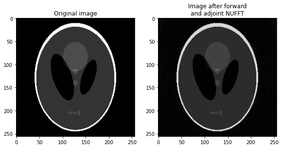

Non-uniform fast Fourier transform (NUFFT)#
TensorFlow MRI provides an efficient NUFFT operator for both CPU and GPU, based
on the algorithms by the Flatiron Institute (see
this paper and
this paper
for more details). The operator is available as
tfmri.signal.nufft.
Note
The tfmri.signal.nufft function is an alias of the nufft function in the
TensorFlow NUFFT
stand-alone package. Please direct any issues about the NUFFT function directly
to the TensorFlow NUFFT repository.
Warning
The current NUFFT implementation uses the FFTW library, which is released under the GNU GPL. If you are using the NUFFT for commercial purposes, you will need to purchase a license from MIT or adapt the code to use a different FFT library. If you do the latter, please consider contributing your modification so others may benefit.
The NUFFT function can be used to efficiently evaluate the Fourier transform when either the input data or the output data does not lie on a uniform grid, in which case the standard fast Fourier transform (FFT) algorithm cannot be used. There are 3 transform types depending whether the input is non-uniform, the output is non-uniform or both input and output are non-uniform.
A type-1 transform evaluates the Fourier transform on a uniform grid given a set of arbitrary points (i.e, non-uniform to uniform).
A type-2 transform evaluates the Fourier transform on a set of arbitrary points given a uniform grid. (i.e., uniform to non-uniform).
A type-3 transform evaluates the Fourier transform on a set of arbitrary points given a set of arbitrary points (i.e., non-uniform to non-uniform).
Tip
The type of the transform can be specified using the transform_type argument.
Warning
NUFFT type-3 is not currently supported or planned, but contributions will be accepted.
The NUFFT may be forward (signal to frequency domain) or backward (frequency to signal domain), regardless of the transform type.
Tip
The direction of the transform can be specified using the fft_direction
argument.
Guided example#
As an example, let’s take an image of the Shepp-Logan phantom and evaluate its Fourier transform on a set of sampling points defining a radial k-space trajectory, using a forward, type-2 NUFFT. Then we will see how to recover the image from the radial k-space data, using a backward, type-1 NUFFT.
%pip install -q tensorflow tensorflow-mri
WARNING: You are using pip version 22.0.4; however, version 22.2 is available.
You should consider upgrading via the '/usr/local/bin/python3.8 -m pip install --upgrade pip' command.
Note: you may need to restart the kernel to use updated packages.
Now import both packages and create an example image using
tfmri.image.phantom:
import tensorflow as tf
import tensorflow_mri as tfmri
# Create
image_shape = [256, 256]
image = tfmri.image.phantom(shape=image_shape, dtype=tf.complex64)
print("image: \n - shape: {}\n - dtype: {}".format(image.shape, image.dtype))
2022-07-21 17:25:43.649824: I tensorflow/core/util/util.cc:169] oneDNN custom operations are on. You may see slightly different numerical results due to floating-point round-off errors from different computation orders. To turn them off, set the environment variable `TF_ENABLE_ONEDNN_OPTS=0`.
2022-07-21 17:25:59.264266: I tensorflow/stream_executor/cuda/cuda_gpu_executor.cc:975] successful NUMA node read from SysFS had negative value (-1), but there must be at least one NUMA node, so returning NUMA node zero
2022-07-21 17:25:59.268928: I tensorflow/stream_executor/cuda/cuda_gpu_executor.cc:975] successful NUMA node read from SysFS had negative value (-1), but there must be at least one NUMA node, so returning NUMA node zero
2022-07-21 17:25:59.269048: I tensorflow/stream_executor/cuda/cuda_gpu_executor.cc:975] successful NUMA node read from SysFS had negative value (-1), but there must be at least one NUMA node, so returning NUMA node zero
2022-07-21 17:25:59.269524: I tensorflow/core/platform/cpu_feature_guard.cc:193] This TensorFlow binary is optimized with oneAPI Deep Neural Network Library (oneDNN) to use the following CPU instructions in performance-critical operations: AVX2 AVX512F AVX512_VNNI FMA
To enable them in other operations, rebuild TensorFlow with the appropriate compiler flags.
2022-07-21 17:25:59.270142: I tensorflow/stream_executor/cuda/cuda_gpu_executor.cc:975] successful NUMA node read from SysFS had negative value (-1), but there must be at least one NUMA node, so returning NUMA node zero
2022-07-21 17:25:59.270251: I tensorflow/stream_executor/cuda/cuda_gpu_executor.cc:975] successful NUMA node read from SysFS had negative value (-1), but there must be at least one NUMA node, so returning NUMA node zero
2022-07-21 17:25:59.270327: I tensorflow/stream_executor/cuda/cuda_gpu_executor.cc:975] successful NUMA node read from SysFS had negative value (-1), but there must be at least one NUMA node, so returning NUMA node zero
2022-07-21 17:25:59.612269: I tensorflow/stream_executor/cuda/cuda_gpu_executor.cc:975] successful NUMA node read from SysFS had negative value (-1), but there must be at least one NUMA node, so returning NUMA node zero
2022-07-21 17:25:59.612401: I tensorflow/stream_executor/cuda/cuda_gpu_executor.cc:975] successful NUMA node read from SysFS had negative value (-1), but there must be at least one NUMA node, so returning NUMA node zero
2022-07-21 17:25:59.612481: I tensorflow/stream_executor/cuda/cuda_gpu_executor.cc:975] successful NUMA node read from SysFS had negative value (-1), but there must be at least one NUMA node, so returning NUMA node zero
2022-07-21 17:25:59.612559: I tensorflow/core/common_runtime/gpu/gpu_device.cc:1532] Created device /job:localhost/replica:0/task:0/device:GPU:0 with 14239 MB memory: -> device: 0, name: NVIDIA GeForce RTX 3080 Laptop GPU, pci bus id: 0000:01:00.0, compute capability: 8.6
image:
- shape: (256, 256)
- dtype: <dtype: 'complex64'>
Let us also create a k-space trajectory. In this example we will create a radial trajectory.
trajectory = tfmri.sampling.radial_trajectory(
base_resolution=256, views=233, flatten_encoding_dims=True)
print("trajectory: \n - shape: {}\n - dtype: {}\n - range: [{}, {}]".format(
trajectory.shape, trajectory.dtype,
tf.math.reduce_min(trajectory), tf.math.reduce_max(trajectory)))
trajectory:
- shape: (119296, 2)
- dtype: <dtype: 'float32'>
- range: [-3.1415927410125732, 3.141521453857422]
The trajectory should have shape [..., M, N], where M is the number of
points and N is the number of dimensions. Any additional dimensions ... will
be treated as batch dimensions.
Batch dimensions for image and traj, if any, will be broadcasted.
Spatial frequencies should be provided in radians/voxel, ie, in the range
[-pi, pi].
Finally, we’ll also need density compensation weights for our set of nonuniform points. These are necessary in the adjoint transform, to compensate for the fact that the sampling density in a radial trajectory is not uniform.
density = tfmri.sampling.radial_density(base_resolution=256, views=233)
density = tf.reshape(density, [-1])
print("density: \n - shape: {}\n - dtype: {}".format(
density.shape, density.dtype))
density:
- shape: (119296,)
- dtype: <dtype: 'float32'>
Forward transform (image to k-space)#
Next, let’s calculate the k-space coefficients for the given image and trajectory points (image to k-space transform).
kspace = tfmri.signal.nufft(image, trajectory,
transform_type='type_2',
fft_direction='forward')
print("kspace: \n - shape: {}\n - dtype: {}".format(kspace.shape, kspace.dtype))
kspace:
- shape: (119296,)
- dtype: <dtype: 'complex64'>
We are using a type-2 transform (uniform to nonuniform) and a forward FFT
(image domain to frequency domain). These are the default values for
transform_type and fft_direction, so providing them was not necessary in
this case.
Adjoint transform (k-space to image)#
We will now perform the adjoint transform to recover the image given the
k-space data. In this case, we will use a type-1 transform (nonuniform to
uniform) and a backward FFT (frequency domain to image domain). Also note that,
prior to evaluating the NUFFT, we will compensate for the nonuniform sampling
density by simply dividing the k-space samples by the density weights.
Finally, for type-1 transforms we need to specify an additional grid_shape
argument, which should be the size of the image. If there are any batch
dimensions, grid_shape should not include them.
# Apply density compensation.
kspace /= tf.cast(density, tf.complex64)
recon = tfmri.signal.nufft(kspace, trajectory,
grid_shape=image_shape,
transform_type='type_1',
fft_direction='backward')
print("recon: \n - shape: {}\n - dtype: {}".format(recon.shape, recon.dtype))
recon:
- shape: (256, 256)
- dtype: <dtype: 'complex64'>
Finally, let’s visualize the images.
import matplotlib.pyplot as plt
def plot_images(image, recon):
_, ax = plt.subplots(1, 2, figsize=(9.6, 5.4))
ax[0].imshow(tf.abs(image), cmap='gray')
ax[0].set_title("Original image")
ax[1].imshow(tf.abs(recon), cmap='gray')
ax[1].set_title("Image after forward\nand adjoint NUFFT")
plt.show()
plot_images(image, recon)

Use the linear operator#
You can also use
tfmri.linalg.LinearOperatorNUFFT
to perform forward and adjoint NUFFT. This might be particularly useful when
building MRI reconstruction methods, as you can take advantage of the features
of the linear algebra framework.
# Create the linear operator for the specified image shape, trajectory and
# density.
linop_nufft = tfmri.linalg.LinearOperatorNUFFT(
image_shape, trajectory=trajectory, density=density)
# Apply forward transform to obtain the *k*-space signal given an image.
kspace = linop_nufft.transform(image)
# Apply adjoint transform to obtain an image given a *k*-space signal.
recon = linop_nufft.transform(kspace, adjoint=True)
plot_images(image, recon)